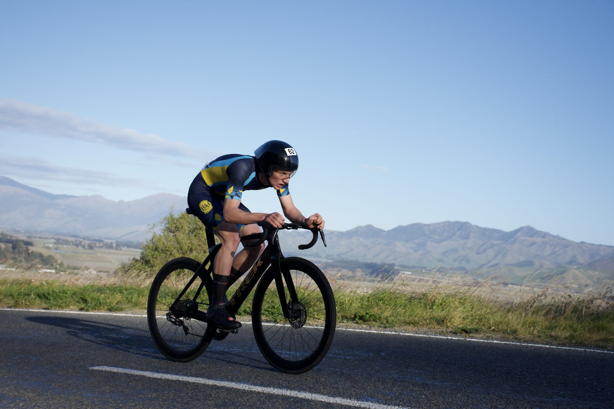
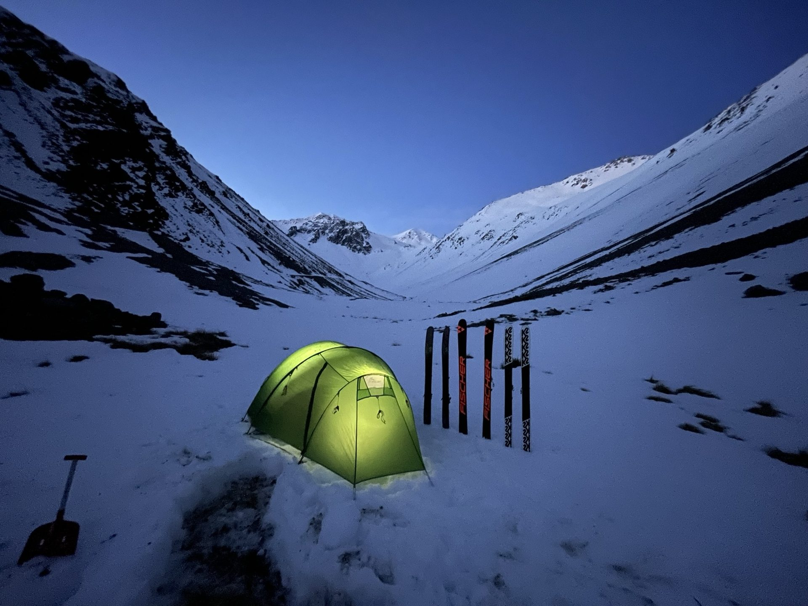

Interests & Activities
My other interests outside of technical work.

Cycling
I have been competitively road cycling since 2018, my passion for the sport led me to found the cycling team at Shirley Boys' High School, growing the team to have nearly twenty riders by my final year. I won the overall individual award for Christchurch Schools Cycling in 2023, but since then my focus has shifted toward high-endurance mountain biking and multi-day backcountry adventures.

Tramping
An avid tramper with an appetite for challenging terrain, I spend much of my free time exploring New Zealand’s backcountry across all seasons. From multi-day alpine crossings and ski touring to winter camping, I enjoy the logistics, self-reliance, and physical endurance required to navigate remote routes and rugged peaks.

Other Endurance Sports
Beyond traditional routes, I thrive on the varied challenges of multi-sport events and adventure racing. This passion brings together my endurance base in road cycling and long-distance mountain biking with outdoor lead climbing and technical navigation, demanding both physical versatility and sharp problem-solving in dynamic environments. Looking ahead, I would love to achieve the ultimate goal of tackling iconic endurance benchmarks like the Coast to Coast and an Ironman.